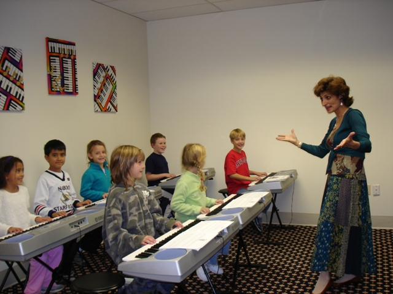

The Method Behind "Keys For Kids"
When my family moved to St. Louis, MO from Riga, Latvia in 1989, I planned to continue my music teaching career in America. Then my experience consisted of 23 years of piano study and 10 years of piano teaching in a classical Russian tradition: one-on-one instruction with an emphasis on a very serious attitude toward studying and practicing music starting at very young age. Weekly classes included solfege/ear training, theory, music literature, and music ensemble in addition to two piano lessons per week.
Everything felt different in America, from a new lifestyle to new music terminology and a new attitude toward music education for children. The idea of combining FUN with EDUCATION was new and exciting, and so compelling compared to the unpleasant memories of my own early music lessons. A variety of colorful music method books lined the shelves in the music stores, each claimed to be the best and the most comprehensive. It was disappointing to find that most books were geared toward older beginners who could already read and write.
A large body of research confirms the tremendous benefits of introducing young children to many kinds of music. How exciting would it be to use children's innate curiosity and their capacity for easy ear training at a young age to produce real results: a genuine understanding, love, and appreciation of music, and the ability to make music! The goal was set to train the brain and ears as well as fingers: young children really can READ music, play the piano, and understand music while having a lot of FUN. I started my classes with the idea of making lessons look more like children's games than "lessons."
Electronic touch-sensitive keyboards provided the opportunity for a small group setting. Children are accustomed to learning in small groups in preschool and school, and a group setting allows children to learn from each other as well as the teacher. Children challenge and encourage each other to keep up with the rest of the group.
We invited parents to be a part of the group too - to enjoy the class with their children, and to be partners in music at home. In class, parents would provide a sense of stability and security for the child, help their children participate, and handle tasks that require reading, such as finding pages or pointing in the book for reading and playing. At home, parents could reinforce concepts introduced in class and help keep the high level of motivation between classes.
A choice of a movable "Do" (as in "Do Re Mi") solfege singing in unique combination with the traditional letter-name notation and the Kodaly sign system provided the basis for the ear training and note reading. Children easily understood the Kodaly "sign language," and enjoyed "catching" me on gradually increasingly difficult patterns. Very soon, they could copy and recall a variety of the 3- to 5- note patterns. This system naturally quickly moved us from singing and copying music patterns to reading these patterns on the music staff. Students developed a great sense of pitch and rhythm while learning to read music in solfege (as in "Do Re Mi") and in traditional music notation (as in "C D E"). The technique engaged the children's attention and stimulated their minds and creativity, while the solfege-based ear training, along with the traditional note reading and rhythmic "games" made music so much more understandable and so much less intimidating. Since those first courses, specific lesson plans and lesson content have certainly evolved through the wonderful experience of working with thousands of children and parents. But the heart of the program and the basic methodology remain centered on the same core belief: children are remarkably capable - at a much younger age than most people think. With the right approach, children can take advantage of that potential and have a lot of fun in the process.